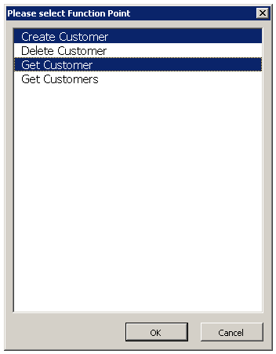
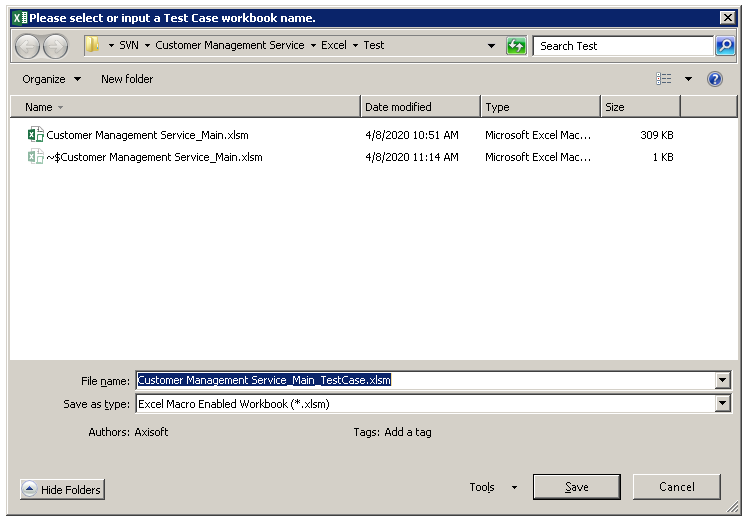

Test Template
A test template is a workbook that stores test cases and test run of an AlchemyJ model. Test cases are defined in a test case worksheet. A test case worksheet is function point based which means all cases on the same test cases worksheet belong to the same function point. However, you may have multiple test case worksheets for the same function points.
To create a new test template for an AlchemyJ workbook, open an AlchemyJ workbook and click Generate Test Template.
{kind=link}
Select a function point from the dialog box.  If you want to create a new test template, type in a filename that does not exist in the directory.  A test run worksheet and a test case sheet will be generated.
{kind=link}
{kind=link}
Test Case
A test case worksheet stores a set of test cases for a specific function point. It also has a Function Point section that stores information of a function point which will be used during test run.
Function Point
The function point section will store the function point information which comes from the model workbook. Only the fields highlighted in Green shall be modified as needed. AlchemyJ automatically generates a different function point section based on whether the selected function point is defined in a Java API class or a REST API Endpoint Group.
Function Point for Java Test Case
For the Java API test case, you can define the function point label in cell B18. It will be one of the case filtering criteria when executing the test case.
{kind=link}
Function Point for REST Test Case
For the REST API test case, you can also define the API login information if the security was enabled for the tested REST API. Update the URL when needs to test the REST API on server.
{kind=link}
Case
Except for the Case and Test Result Status, other sections are generated by function point input or out output definition.
The data type for input or output columns will be specified according to the settings in Data Dictionary. Otherwise, they will be treated as String by default. The data type of test result is Boolean.
{kind=link}
| Section Name | Dynamic Columns | Description |
|---|---|---|
| Case | No | Case ID - Function point name with sequence number. For example, Get_Customer_Rest_001 Case Label - Custom label for filtering when executing the case Description - Case description By default, there would be 10 cases being generated. If there is a need to define more cases, use the Append Test Case feature from the AlchemyJ ribbon. |
| Input | Yes | Columns are auto-generated by input parameters of the function point. The default value is the Example Value defined in Function Input Parameters section of the model workbook. |
| Studio Expected Result | Yes | Columns are auto-generated by defined Return Data Address of the function point. The expected result can be copied from the studio test result by using the Copy Test Result to Empty Expected Result feature when building the test file for the first time. |
| Studio Test Result | Yes | Columns are the same as Studio Expected Result. It contains the test result when running the test case in AlchemyJ Studio. |
| Studio Test Result Match | Yes | Columns are the same as Studio Expected Result. It uses the formula to check whether the test results are matched with the expected result for each column. True or False will be returned. In some cases, it is difficult to define the expected value. For example, a dynamic ID generated by the system or current date-time. Then you could remove the formula in the cell to skip the checks for such data. |
| Studio Test Result Status | No | It will show 'Passed' when all studio test result is TRUE. Otherwise, it will be 'Failed'. |
| API Expected Result (If different from Studio) | Yes | Columns are the same as Studio Expected Result. The expected result can be copied from the studio test result by using the Copy Test Result to Empty Expected Result feature when building the test file for the first time. Modify the test result if different from Studio. |
| API Test Result | Yes | Columns are the same as Studio Expected Result. It contains the test result when running the test case in API. |
| API Test Result Match | Yes | Columns are the same as Studio Expected Result. It uses the formula to check whether the test results are matched with the expected result for each column. True or False will be returned. In some cases, it is difficult to define the expected value. For example, a dynamic ID generated by the system or current date-time. Then you could remove the formula in the cell to skip the checks for such data. |
| API Test Result Status | No | It will show 'Passed' when all API test result is TRUE. Otherwise, it will be 'Failed' |
Test Run
Test Case Criteria, Test Execution Summary and Test Result sections are included in the Test Run worksheet. Use Test Tools - Add Test Run in the testing workbook and you can get the additional test run worksheet. Thereafter, you can define the different case criteria in different test run worksheets.
{kind=link}
Test Case Criteria
The test case is run on AlchemyJ Studio or run on API or both. When Execute Test Case from AlchemyJ ribbon, only the test cases that match the test criteria will be executed. All test cases will be executed on AlchemyJ Studio if no value is inputted in the test case criteria. Use semicolon ';' if there is a need to filter the cases by multiple values. For example, Case001;Case002.
| Field | Support Multiple Value | Description |
|---|---|---|
| Run On | No | AlchemyJ Studio or API. Default value is AlchemyJ Studio. When you need to run test cases on API, the API needs to be generated before execution. |
| Package Sheet Name | No | ##JavaApiPackage or ##RestApi. When the test package is REST API, the REST service needs to be started before execution. |
| Endpoint Group / Class Name | Yes | Class Name of the function point. All cases will be run. |
| Function Point | Yes | Name of the function point. |
| Function Point Label | Yes | Function point label defined in the Test Case worksheet. |
| Case ID | Yes | Test case ID defined in the Test Case worksheet. |
| Case Label | Yes | Test case label defined in the Test Case worksheet. |
Test Execution Summary
Show the testing result summary and the test case running duration. You can view the overall testing result in this section.
Test Result
Show the test execution result and duration for each test case.